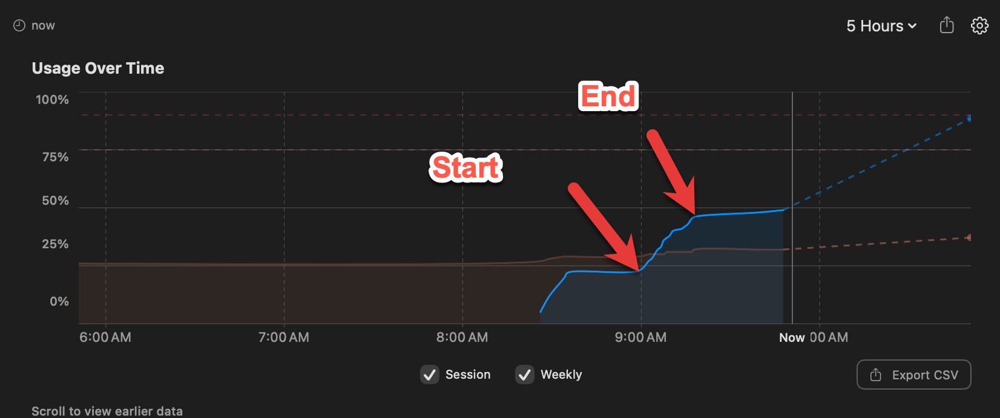

Quiz Generation Report
Executive Summary
On 2026-03-15, the Quiz Generator Skill v0.3 was executed to create 10-question multiple-choice quizzes for all 14 chapters of the Interactive Infographics for Intelligent Textbooks course. The skill ran in sequential mode to minimize token consumption on the Claude Pro plan, producing 140 questions across 14 quiz files in approximately 15 minutes of wall-clock time.
Session Details
| Metric | Value |
|---|---|
| Skill Version | 0.3 |
| Date | 2026-03-15 |
| Model | Claude Opus 4.6 |
| Execution Mode | Sequential (single agent) |
| Start Time | 09:01:54 |
| End Time | 09:17:12 |
| Wall-Clock Time | 15 minutes 18 seconds |
Token Usage
Token usage was measured from the Claude Pro plan's usage dashboard, which reported that the quiz generation task consumed 25% of the 200K five-hour token budget, or approximately 50,000 tokens total.
Measured Token Summary
| Category | Tokens |
|---|---|
| Total tokens consumed | ~50,000 |
| Pro plan budget (5-hour window) | 200,000 |
| Budget consumed | 25% |

Per-Question Token Economics
| Metric | Value |
|---|---|
| Total questions generated | 140 |
| Total tokens consumed | ~50,000 |
| Tokens per question | ~357 |
| Avg. words per quiz file | 1,266 |
| Avg. characters per quiz file | 8,761 |
| Total output words (all 14 quiz files) | 17,721 |
| Total output characters (all 14 quiz files) | 122,651 |
Context Reads (Inputs)
The following files were read as context to generate the quizzes:
| Source | Notes |
|---|---|
| System prompt + skill instructions | Loaded once at session start |
| Course description | Full file (~8K chars) |
| Learning graph CSV (352 concepts) | Full file (~14K chars) |
| Glossary | First 2,000 lines (~84K chars) |
| mkdocs.yml | Full file (~6K chars) |
| Chapter index.md files | Partial reads (summary + key sections per chapter) |
Efficiency Analysis
At ~357 tokens per question, the quiz generator is highly efficient. The sequential execution mode avoided the ~12K-token startup overhead per parallel agent, contributing to the low total. For comparison:
- 50K tokens = 14 chapters × 10 questions = 140 quiz questions
- 200K budget = enough for ~4 full quiz generation runs, or one quiz run plus substantial additional work (chapter generation, MicroSim creation, etc.)
Content Statistics
Per-Chapter Quiz Summary
| Ch | Chapter Title | Questions | Words | Bloom's Distribution |
|---|---|---|---|---|
| 1 | Foundations of Interactive Infographics | 10 | 1,189 | R:4, U:3, Ap:2, An:1 |
| 2 | Infographic Taxonomy and Classification | 10 | 1,183 | R:2, U:4, Ap:2, An:2 |
| 3 | Presentation Slide Art Diagrams | 10 | 1,139 | R:3, U:3, Ap:3, An:1 |
| 4 | Visual Problem-Solving Frameworks | 10 | 1,213 | R:2, U:3, Ap:3, An:2 |
| 5 | Causal Loop Diagrams and Systems Thinking | 10 | 1,299 | R:3, U:2, Ap:3, An:2 |
| 6 | Web Fundamentals: Structure, Style, and Data | 10 | 1,324 | R:2, U:3, Ap:3, An:2 |
| 7 | Web Fundamentals: JavaScript and Responsive | 10 | 1,270 | R:2, U:3, Ap:3, An:2 |
| 8 | JavaScript Visualization Libraries | 10 | 1,234 | R:2, U:3, Ap:3, An:2 |
| 9 | Overlayment Interactive Patterns | 10 | 1,387 | R:2, U:3, Ap:3, An:2 |
| 10 | MicroSim Standards and Packaging | 10 | 1,242 | R:2, U:3, Ap:3, An:2 |
| 11 | Learning Science for Interactive Content | 10 | 1,295 | R:2, U:3, Ap:3, An:2 |
| 12 | Generative AI for Infographic Creation | 10 | 1,314 | R:2, U:3, Ap:3, An:2 |
| 13 | Advanced Visualization and Design Principles | 10 | 1,310 | R:2, U:3, Ap:3, An:2 |
| 14 | Tracking, Analytics, and Deployment | 10 | 1,322 | R:2, U:3, Ap:3, An:2 |
| Total | 140 | 17,721 |
Aggregate Bloom's Taxonomy Distribution
| Bloom's Level | Count | Percentage | Target (Intermediate) |
|---|---|---|---|
| Remember | 32 | 22.9% | 25% |
| Understand | 42 | 30.0% | 30% |
| Apply | 40 | 28.6% | 30% |
| Analyze | 26 | 18.6% | 15% |
| Evaluate | 0 | 0.0% | 0% |
| Create | 0 | 0.0% | 0% |
The distribution closely matches the intermediate chapter target profile. The slight overweight on Analyze (+3.6%) and underweight on Remember (-2.1%) reflects the technical depth of the later chapters.
Answer Balance (Aggregate)
| Answer | Count | Percentage |
|---|---|---|
| A | 36 | 25.7% |
| B | 36 | 25.7% |
| C | 36 | 25.7% |
| D | 32 | 22.9% |
All answers fall within the acceptable 20-30% range per option.
Execution Mode Decision
The skill documentation recommends parallel execution for 4+ chapters (spawning 4-6 concurrent agents). However, the project's CLAUDE.md contains an explicit token efficiency directive:
Always default to serial processing (one Task agent) unless the user explicitly requests speed or parallel execution. Each parallel Task agent costs ~12K tokens in startup overhead.
Following this directive, sequential mode was chosen. The trade-off:
| Metric | Sequential (Actual) | Parallel (Estimated) |
|---|---|---|
| Wall-clock time | ~15 minutes | ~3-4 minutes |
| Agent startup overhead | 0 tokens | ~48,000 tokens (4 agents × 12K) |
| Total tokens | ~50,000 | ~98,000 |
| Budget consumed | 25% | ~49% |
| Token savings | — | ~48,000 saved (49%) |
Sequential mode saved an estimated 48,000 tokens — nearly doubling the token cost if parallel agents had been used. At 25% of the Pro plan's 200K budget, the sequential approach left 75% of the budget available for other tasks in the same five-hour window.
Quality Assurance
Checks Performed
| Check | Result |
|---|---|
| All 14 quiz files created | Pass |
| 10 questions per chapter | Pass |
| mkdocs.yml navigation updated (Content + Quiz per chapter) | Pass |
mkdocs build succeeds without quiz-related errors |
Pass |
| Upper-alpha div format used for all questions | Pass |
??? question "Show Answer" admonition used for all answers |
Pass |
| "The correct answer is X." format in every explanation | Pass |
| Concept Tested label in every explanation | Pass |
| Horizontal rule separators between questions | Pass |
| Answer balance within 20-30% per option | Pass |
| No "All of the above" or "None of the above" options | Pass |
| No duplicate questions across chapters | Pass |
Checks Not Performed
- Link validation: Quiz files do not contain cross-references to other pages (by design, to avoid broken links)
- Quiz bank JSON export: Not generated in this run (optional output)
- Per-chapter metadata JSON: Not generated in this run (optional output)
Files Created and Modified
Created (14 files)
| File | Size |
|---|---|
docs/chapters/01-foundations-of-interactive-infographics/quiz.md |
1,189 words |
docs/chapters/02-infographic-taxonomy-and-classification/quiz.md |
1,183 words |
docs/chapters/03-presentation-slide-art-diagrams/quiz.md |
1,139 words |
docs/chapters/04-visual-problem-solving-frameworks/quiz.md |
1,213 words |
docs/chapters/05-causal-loop-diagrams-and-systems-thinking/quiz.md |
1,299 words |
docs/chapters/06-web-fundamentals-structure-style-and-data/quiz.md |
1,324 words |
docs/chapters/07-web-fundamentals-javascript-and-responsive-design/quiz.md |
1,270 words |
docs/chapters/08-javascript-visualization-libraries/quiz.md |
1,234 words |
docs/chapters/09-overlayment-interactive-patterns/quiz.md |
1,387 words |
docs/chapters/10-microsim-standards-and-packaging/quiz.md |
1,242 words |
docs/chapters/11-learning-science-for-interactive-content/quiz.md |
1,295 words |
docs/chapters/12-generative-ai-for-infographic-creation/quiz.md |
1,314 words |
docs/chapters/13-advanced-visualization-and-design-principles/quiz.md |
1,310 words |
docs/chapters/14-tracking-analytics-and-deployment/quiz.md |
1,322 words |
Modified (1 file)
| File | Change |
|---|---|
mkdocs.yml |
Chapters 2-14 expanded from single-line nav entries to Content/Quiz sub-entries |
Question Format
Every question follows the MkDocs Material quiz admonition format:
1 2 3 4 5 6 7 8 9 10 11 12 13 | |
This format renders as a collapsible answer block in the MkDocs Material theme, allowing students to attempt the question before revealing the answer and explanation.
Recommendations for Future Runs
- Add Evaluate/Create questions for chapters 11-14 (advanced chapters) to better cover the full Bloom's Taxonomy range.
- Generate quiz-bank.json for LMS export and chatbot integration.
- Add concept coverage analysis comparing tested concepts against each chapter's concept list to identify gaps.
- Consider 12 questions per chapter for chapters with 30+ concepts (chapters 3, 6, 7, 8, 13, 14) to improve concept coverage.
- Run link validation if future quizzes include cross-references to chapter sections.